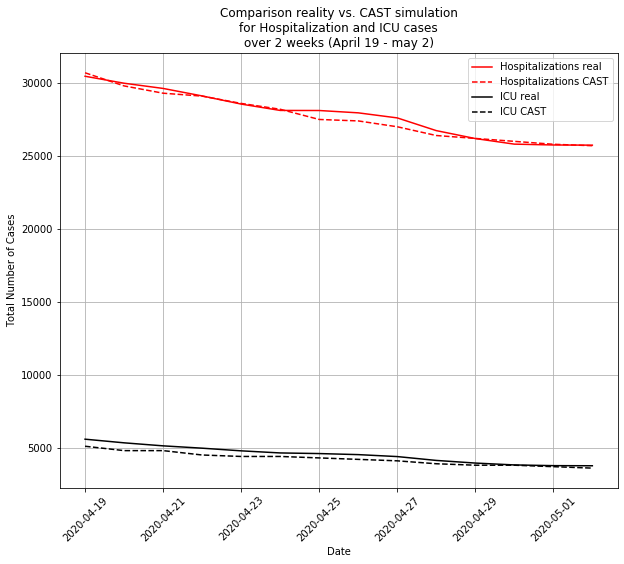
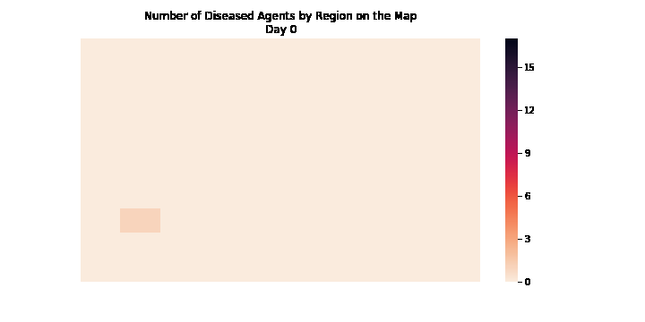
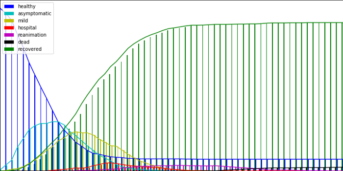
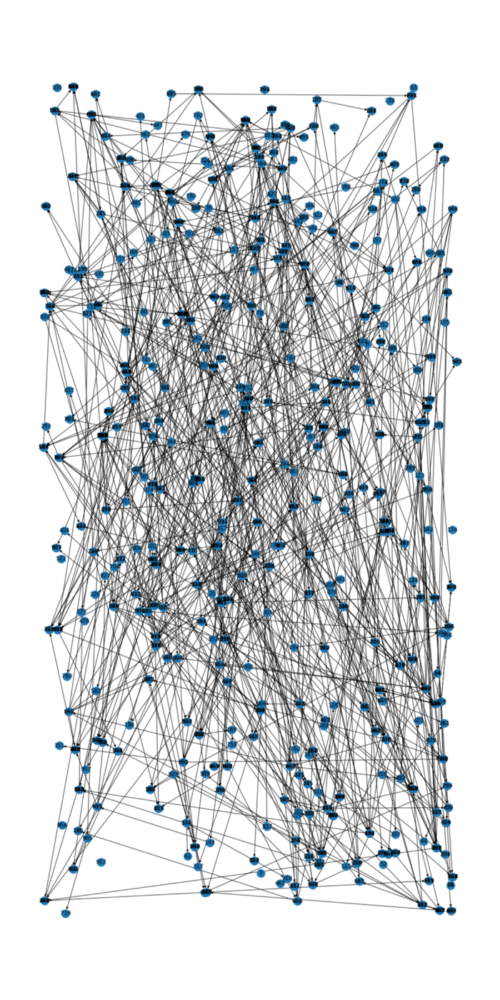
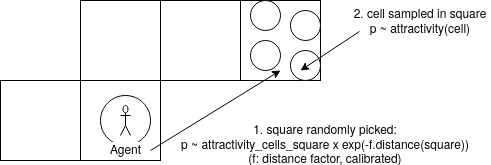
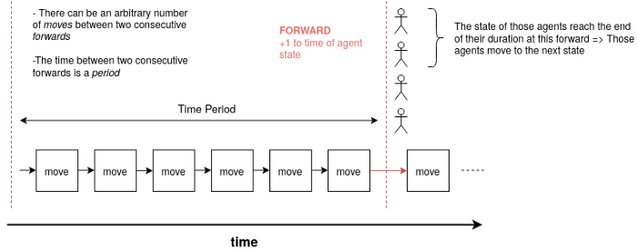
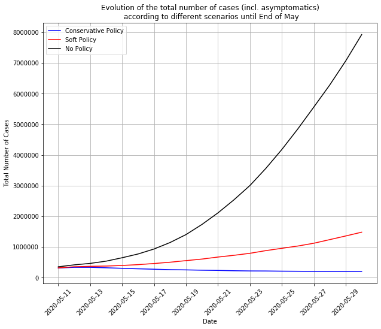

CAST Model for Covid Prediction
- 26 Apr 2020
- Manuel Capel
- Tags: simulation machine learning
Unless you spent these last few months in a cave in the end of the world (but then you’re probably not reading this article), you couldn’t escape the information about the Covid-19 pandemic. The difficulty to model its evolution is striking. In the US for example, a recent report of the CHS warned about this in a review of existing methods. They call therefore for the creation of a national outbreak science centre. Here is an article about CAST, an agent-based micro-simulation model I developed over the last few weeks as an attempt to male prediction about Corona spread.
Forecasting models do exist, like the famous predictions from the Imperial College. But it’s clear that even at the government level, it’s very difficult to get precise forecasts. Like the CHS, many note there is much room for improvement in this field. That’s why we decided at Parcoor to bring our contribution, fully available on Github.
CAST model in a few words
In a nutshell, CAST simulates agents moving from cell to cell on a map. The cells represent public or private places. An agent can get infected when together in the same cell at the same time as another infected agent. Once infected, an agent transitions from state to state, influencing its behavior. Each of these steps is made randomly according to probabilities reflecting the circumstances, for example, lower probability of moving to simulate a lockdown, etc.
The first goal is to have a model realistic enough while still relatively easy to compute. The second goal is to predict the impact of sanitary measures like lockdown, generalized mask wearing within the population (by reducing the contagiousity parameter of the agents on the map) by simply modifying the corresponding parameters in the model.
Here we use this model for simulating the propagation of a contagious disease within a population. But it’s not the only possible use case. We could also imagine to simulate the propagation of a computer virus (where the agents would be files, the cells would be servers). And many more.
The goal is not to fit curves, but the underlying behaviors and to find the curves from them.
A few results on France
We simulated a map of France at a 1/100 scale after calibrating the model parameters concerning moves, transmission etc. to fit the evolution of the covid-19 epidemics in this country.
For the lockdown time, CAST simulations finds results very close to reported numbers concerning hospitalization and ICU rates due to Covid-19:

By simulating behaviors at a very individual level, the model calibration could find other interesting insights, like:
- the incubation time very close to 5.3 days found by other means in other publications
- It looks like French people (before lockdown) move around 65% less when symptomatic (coughing etc.). Unfortunately we couldn’t find any statistics to confirm or refute this, but it looks at least plausible
- The default setting of public places reduces just by 20% the contagion probability (cell unsafety around 0.8, see below). There is thus much room for improvement by imposing social distancing and other rules to prevent contamination in public places.
Toy simulation
We ran a simulation on a map containing 1000 agents and 600 cells, all randomly placed on a map. This is the evolution of the number of diseased agent with time in the different regions of the map:

Each square could represent the regions of a country.
Regarding the evolution of the number of agents in the different states through time, this is what we obtain:

Here we can observe that CAST comes up naturally to the herd immunity after a given proportion of the population has been infected. “Naturally”, because it results from the evolution of the simulation, without having been parametrized.
The implementation of the CAST model allows also to keep trace of which agent infected which other agent. So we can visualize this contamination chain:

This tracing of the contamination chain also enables to model the effect of contact tracing for containing the epidemic.
Now let’s dive in more in the details of this CAST model…
Model description
Basic objects
Basically, this model considers three types of object:
-
Cell. A cell can contain 0, 1 or many agents at any time. It has also a position (Euclidean coordinates on a plan)
-
Agent. An agent has one (and only one) state at a given moment, and is also in one (and only one) cell. The cell where an agent is initially is considered to be its home_cell.
-
State. A state has a predefined severity, contagiousity and sensitivity, all in \((0, 1)\).
Contagion
A contagion happens within a cell, when it contains several agents at the same time and one of them is contagious.
When an agent has a state with contagiousity > 0, then the other agents in the same cell can get infected.
The probability of \(Agent_A\) to contaminate \(Agent_B\) in cell is given by:
\[p = contagiousity(state(Agent_A)) \times sensitivity(state(Agent_B)) \times unsafety(cell)\]Note:
- The highest contagiousity in the cell is taken to compute \(p\).
- The unsafety of a cell measures how a cell is unsafe for contagion (social distancing respected or not inside etc.)
If \(Agent_B\) gets infected, it gets to its own state having the least strictly positive $severity$ (it can’t jump directly to a more severe state).
State transition
A state transition matrix and state durations are attached to each agent. The state transition matrix is a Markovian matrix describing the transition probabilities between the states an agent can take. The state durations are the duration of each state. If an agent is in a given state, it will switch to another one sampled according to its state transition matrix.
Note: Different agents can share the same states and the same state transition matrix but have different state durations, or have the same state, the same state durations but a different state transition matrix, or etc.
Moves
A move consists of moving agents to other cells. When a move is done, all agents are concerned. It happens it two steps:
- Selecting agents that will move
- moving the selected agents to their new cells
Agent selection
The probability of an agent to be selected for a move is:
\[p = proba\_move(agent) \times (1 - severity(state(agent)))\]The first factor represents the mobility of the agent so to say. The second factor represents the fact that the more severe the state of an agent, the less the probability that it will move.
Cell selection
The map is divided into squares containing cells. Let’s take an agent having its home cell on square \(S_0\). First, a square is randomly selected according to its distance to \(S_0\) and to the attractivity of the cells it contains. Let say, the square \(S_1\) is selected. Then, within \(S_1\), a cell is randomly selected according to its attractivity. Why make it like that in two steps? For 2 reasons:
-
Reducing the memory load of the model: imagine computing and storing all the mutual distances between millions of cells, it would be very heavy. With this approach, we only have to compute and store the distances between squares. If you divide a map into 100x100 squares, those are around 50 millions of distances ( (100x100)²/2), which is manageable.
-
In reality, squares represent blocks of around 1x1 or 2x2km. within such a block, we consider the distance doesn’t play a role in the decision to move in one or the other place (cell). It’s probably also the case in reality.

Note:
- A limitation of this model is that the attractivity of each cell is the same for all agent. An extension/refinement of this model would be to have cell attractivities personalized by agent.
- The distance is always computed from the home_cell of an agent, not from its current_cell. An agent is considered wandering around its home_cell.
- The agents not selected for a move will be moved to their home_cell afterwards
Temporality
Each time period contains move rounds (they don’t have to have all the same number of move rounds). During each move round, agents are selected and moved as described above. If they are infected, they can infect other agents in the same cell than themselves. A time period finishes when all agents are simultaneously forwarded. Each agent is actually in a given state, that has a given duration. By a forward, the time in this state is incremented by 1. If this time then exceeds the duration of the current state of the agent, the agent transitions to the next state according to its transition described above. 
Simulating scenarios
There are many options for public policies, such as:
- Mask wearing, who, where?
- Contact tracing
- Re-opening of given public places
- Etc.
How to simulate them with CAST? It’s relatively easy. People wearing mask are simulated by agents having contagiousity parameter equals to 0. For contact tracing, as the contamination chain is kept in memory, once an agent transitions to a symptomatic state, you can reduce drastically the parameter $p_move$ (corresponding to the probability of moving) of the agents it contaminated before. Opening or closing public places corresponds to setting the attractivity of the concerned cells to their initial value or to 0. This framework, though relatively easy, allows a great variety of simulations and policy simulations.
Here we simulated 3 different scenarios for France following the end of the lockdown on May 11:

here:
- Conservative Policy means 90% of people wearing masks, 70% of contact tracing and public places 50% safer (from a contagion point-of-view)
- Soft Policy means 30% wearing masks, no contact-tracing, public places 50% safer
- No Policy means going back to the situation prevailing before the lockdown, back to full normality.
With this soft policy, there would be a second wave around the end of June as hard as the first wave. With no policy at all, the second wave would be 6.5x harder than the first one, a completely unmanageable tsunami. But… with the hard policy, the epidemics is contained and goes further down.
Note: we haven’t mentioned here the initialization of the simulation. How do we estimate how many symptomatic and symptomatic cases there is at the start of the simulation? That could be the subject of another article. To make it simple: the population is splitted into different demographics (man younger than 20 years old, women younger than 20 years old etc.). For each of those demographics, we have estimates of their probability and time to get hospitalized if symptomatic from this paper. Then, from the number of new hospitalizations per day by demographic from public datasets we can infer the number of symptomatic cases few days before. And then by a similar method from symptomatic to asymptomatic cases.
Perspectives
CAST simulates behaviors at a very granular level. It could be interesting to simulate different kinds of scenario in various countries or regions to get some insights on possible epidemics evolutions.
The model is computationally already pretty efficient, due to a fully vectorized numpy implementation and also a GPU implementation with cupy. However, there are certainly ways to make it more efficient with e.g. C++ or Tensorflow implementations.
Other ways for improving this model would be for example to enable cells to have different attractivity according to population categories, e.g cells that would be more attractive for young people that for elderlies or the other way around.
To conclude, this model is probably not the ultimate solution, but we think it makes it possible to provide useful forecasts and therefore contribute to the emerging outbreak science.